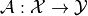
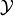
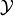
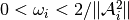
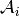

kaczmarz¶
-
odl.solvers.iterative.iterative.kaczmarz(ops, x, rhs, niter, omega=1, projection=None, random=False, callback=None, callback_loop='outer')[source]¶ Optimized implementation of Kaczmarz’s method.
Solves the inverse problem given by the set of equations:
A_n(x) = rhs_n
This is also known as the Landweber-Kaczmarz’s method, since the method coincides with the Landweber method for a single operator.
- Parameters
- opssequence of
Operator’s Operators in the inverse problem.
op[i].derivative(x).adjointmust be well-defined forxin the operator domain and for alli.- x
op.domainelement Element to which the result is written. Its initial value is used as starting point of the iteration, and its values are updated in each iteration step.
- rhssequence of
ops[i].rangeelements Right-hand side of the equation defining the inverse problem.
- niterint
Number of iterations.
- omegapositive float or sequence of positive floats, optional
Relaxation parameter in the iteration. If a single float is given the same step is used for all operators, otherwise separate steps are used.
- projectioncallable, optional
Function that can be used to modify the iterates in each iteration, for example enforcing positivity. The function should take one argument and modify it in-place.
- randombool, optional
If
True, the order of the operators is randomized in each iteration.- callbackcallable, optional
Object executing code per iteration, e.g. plotting each iterate.
- callback_loop{‘inner’, ‘outer’}
Whether the callback should be called in the inner or outer loop.
- opssequence of
See also
Notes
This method calculates an approximate least-squares solution of the inverse problem of the first kind
for a given , i.e. an approximate solution
 to
tofor a (Frechet-) differentiable operator  between Hilbert spaces
 and . The method
starts from an initial guess
and . The method
starts from an initial guess  and uses the
iteration
and uses the
iterationwhere is the Frechet derivative of at , is a relaxation parameter and .
For linear problems, a choice  guarantees convergence, where stands for the operator norm of .
This implementation uses a minimum amount of memory copies by applying re-usable temporaries and in-place evaluation.
The method is also described in a Wikipedia article. and in Natterer, F. Mathematical Methods in Image Reconstruction, section 5.3.2.